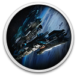

 STASIS
Details
 |
|
| Playtime | Not Played |
| Last Activity | Never |
| Added | 8/23/2022 11:38:54 |
| Modified | 10/19/2022 18:39:56 |
| Completion Status | Not Played |
| Library | Gog |
| Source | GOG |
| Platform | Steam |
| Release Date | 8/31/2015 |
| Community Score | 71 |
| Critic Score | 67 |
| User Score | |
| Genre | Adventure Indie |
| Developer | The Brotherhood Games |
| Publisher | Daedalic Entertainment |
| Feature | Single Player |
| Links | Store |
| Tag | |
Description
VOTED BEST ADVENTURE GAME OF 2015!
STASIS is a point-and-click, sci-fi - horror adventure game played from a unique isometric perspective. STASIS intertwines a gruesome narrative with retro adventure gameplay. Combine items, interact with computers and solve puzzles while experiencing the gritty atmosphere.
In the distant future, aboard a seemingly abandoned spacecraft, John Maracheck awakes from stasis. He must push himself to new physical and emotional limits and unravel the mysteries around him.
John is in tremendous pain, his wife and daughter are missing, and time is running out as the Groomlake plunges further into the swirling blue methane clouds of Neptune.

KEY FEATURES
- Challenging and realistic puzzles
- Cinematic AAA music composed by Mark Morgan (Fallout)
- Highly detailed 2D isometric graphics
- Classic point-and-click interaction
- Multiple characters to engage and work with
- John can (and will) die in the most horrific ways imaginable
- Special objects can be used on John himself to end it all
- A holographic stripper


STORY
A compelling dystopian narrative intertwines this mature adventure tale. Access computer terminals and engage with the environment like never before. A great deal of character backstory and information can also be found on the PDAs littered around the corpses aboard the Groomlake.
GAMEPLAY
Click, read and interact to explore the dark corners of the Groomlake, to gather inventory items and clues to help solve puzzles to progress further.
GRAPHICS
STASIS has an isometric visual aesthetic that brings a new angle to adventure games. Each scene has been individually detailed and created to craft the perfect backdrop for the gloomy adventure. While uniquely isometric, be ready for riveting cut scenes.
VOICE ACTING
The story unfolds with professional voice acting and a rising score - emotive on both accounts. The talented voice artists build up the depth of each the characters that you'll meet.
MUSIC
The legendary Mark Morgan (Wasteland 2, Fallout) has created a moving score, steeped in fear and emotion. Additional music has been penned by Daniel Sadowski (Counter-Strike: Global Offensive, Warhammer) who has given the soundtrack a unique cinematic edge.STASIS has lovingly been crafted by Christopher Bischoff for the past 5 years. In 2013, a successful Kickstarter aided in the further development of the game.
[BEST ADVENTURE GAME 2015] http://www.adventuregamers.com/articles/view/29966/page17
Linux Beta now available - Check Discussion Forum for details.